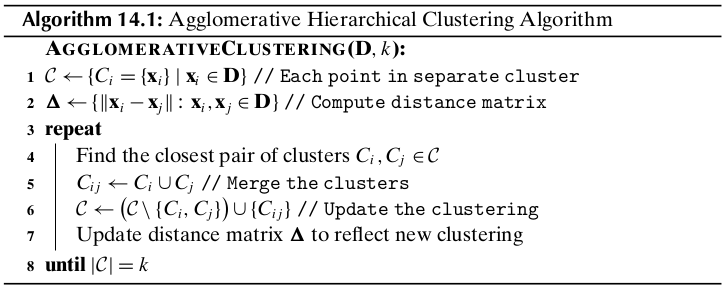

Chapter 14 Hierarchical Clustering¶
Given \(n\) points in a \(d\)-dimensional space, the goal of hierarchical clustering is to create a sequence of nested partitions, which can be conveniently visualized via a tree or hierarchy of clusters, also called the cluster dendrogram.
There are two main algorithmic approaches to mine hierarchical clusters: agglomerative and divisive. Agglomerative strategies work in a bottom-up manner. That is, starting with each of the \(n\) points in a separate cluster, they repeatedly merge the most similar pair of clusters until all points are members of the same cluster. Divisive strategies do just the opposite, working in a top-down manner. Starting with all the points in the same cluster, they recursively split the clusters until all points are in separate clusters.
14.1 Preliminaries¶
Given a dataset \(\D\) comprising \(n\) points \(\x_i\in\R^D(i=1,2,\cds,n)\), a clustering \(\cl{C}=\{C_1,\cds,C_k\}\) is a partition of \(\D\), that is, each cluster is a set of points \(C_i\subseteq\D\), such that the clusters are pairwise disjoint \(C_i\cap C_j=\emptyset\) (for all \(i\neq j\)), and \(\cup_{i=1}^kC_i=\D\). A clustering \(\cl{A}=\{A_1,\cds,A_r\}\) is said to be nested in another clustering \(\cl{B}=\{B_1,\cds,\B_s\}\) if and only if \(r>s\), and for each cluster \(A_i\in\cl{A}\), there exists a cluster \(B_j\in\cl{B}\), such that \(A_i\subseteq B_j\). Hierarchical clustering yields a sequence of \(n\) nested partitions \(\cl{C}_1,\cds,\cl{C}_n\). The clustering \(\cl{C}_{t-1}\) is nested in the clustering \(\cl{C}_t\). The cluster dendrogram is a rooted binary tree that captures this nesting structure, with edges between cluster \(C_i\in\cl{C}_{i-1}\) and cluster \(C_j\in\cl{C}_t\) if \(C_i\) is nested in \(C_j\), that is, if \(C_i\subset C_j\).
Number of Hierarchical Clusterings
The number of different nested or hierarchical clusterings corresponds to the number of different binary rooted trees or dendrograms with \(n\) leaves with distinct labels. Any tree with \(t\) nodes has \(t−1\) edges. Also, any rooted binary tree with \(m\) leaves has \(m−1\) internal nodes. Thus, a dendrogram with \(m\) leaf nodes has a total of \(t=m+m−1=2m−1\) nodes, and consequently \(t−1=2m−2\) edges. The total number of different dendrograms with \(n\) leaves is obtained by the following product:
14.2 Agglomerative Hierarchical Clustering¶
14.2.1 Distance between Clusters¶
The between-cluster distances are ultimately based on the distance between two points, which is typically computed using the Euclidean distance or \(L_2\) -norm, defined as
Single Link
Given two clusters \(C_i\) and \(C_j\), the distance between them, denoted \(\delta(C_i,C_j)\), is defined as the minimum distance between a point in \(C_i\) and a point in \(C_j\)
Note
\(\delta(C_i,C_j)=\min\{\lv\x-\y\rv|\x\in C_i,\y\in C_j\}\)
Complete Link
The distance between two clusters is defined as the maximum distance between a point in \(C_i\) and a point in \(C_j\):
Note
\(\delta(C_i,C_j)=\max\{\lv\x-\y\rv|\x\in C_i,\y\in C_j\}\)
Group Average
The distance between two clusters is defined as the average pairwise distance between points in \(C_i\) and \(C_j\):
Note
\(\dp\delta(C_i,C_j)=\frac{\sum_{\x\in C_i}\sum_{\y\in C_j}\lv\x-\y\rv}{n_i\cd n_j}\)
where \(n_i=|C_i|\) denotes the number of points in cluster \(C_i\).
Mean Distance
The distance between two clusters is defined as the distance between the means or centroids of the two clusters:
Note
\(\delta(C_i,C_j)=\lv\mmu_i-\mmu_j\rv\)
where \(\mmu_i=\frac{1}{n_i}\sum_{\x\in C_i}\x\).
Minimum Variance: Ward’s Method
The sum of a squared errors (SSE) for a given cluster \(C_i\) is given as
The SSE for a clustering \(\cl{C}=\{C_1,\cds,C_m\}\) is given as
After simplification, we get
Note
\(\dp\delta(C_i,C_j)=\bigg(\frac{n_in_j}{n_i+n_j}\bigg)\lv\mmu_i-\mmu_j\rv^2\)
14.2.2 Updating Distance Matrix¶
Whenever two clusters \(C_i\) and \(C_j\) are merged into \(C_{ij}\), we need to update the distance matrix by recomputing the distances from the newly created cluster \(C_{ij}\) to all other clusters \(C_r\) (\(r \ne i\) and \(r \ne j\)). The Lance–Williams formula provides a general equation to recompute the distances for all of the cluster proximity measures we considered earlier; it is given as
Note
\(\delta(C_{ij},C_r)=\alpha_i\cd\delta(C_i,C_r)+\alpha_j\cd\delta(C_j,C_r)+\beta\cd\delta(C_i,C_j)+\gamma\cd|\delta(C_i,C_r)-\delta(C_j,C_r)|\)
The coefficients \(\alpha_i,\alpha_j,\beta\) and \(\gamma\) differ from one measure to another.
14.2.3 Computational Complexity¶
The computational complexity of hierarchical clustering is \(O(n^2\log n)\).